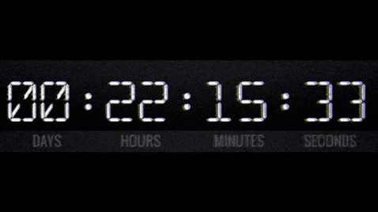
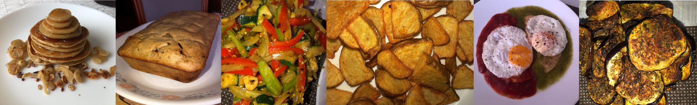

Vivía en una monotonía.
“Si quieres que algo suceda, no se lo cuentes a nadie”; eso me dice mi mamá desde que tengo memoria. Con el paso de los años, he comprobado lo cierto que es. A veces es frustrante, saber que tienes un secreto que estás ansiosa por revelar, pero prefieres no hacerlo para verlo hacerse realidad. Este fue mi caso.
La historia es la siguiente:
Ignoren mi canto y escuchen
cómo estaba llorando.
Aún no lo creo esto no pasó pic.twitter.com/dUmRXGdoXA
— ùêí (@sabinapareja) December 26, 2013
Ya no es lo mismo escuchar Right There, Last Christmas, Honeymoon Avenue y The Way. pic.twitter.com/f511KQ5E8Y
— ùêí (@sabinapareja) January 16, 2014
Como cualquier adolescente en el mundo, me obsesioné con una banda. En mi caso, fue One Direction. Para mí ellos eran lo más espectacular que existía, y al verlos con mi perspectiva inmadura de niña de 14 años, estaba convencida de que iba a casarme con alguno de ellos. Tenía claro que haría todo lo que estuviera a mi alcance por tenerlos lo más cerca posible el día que los viera en vivo.

Tronco de fotografaüëåüí• #takemeback #wherewearetour pic.twitter.com/uLr3b6SlTg
— ùêí (@sabinapareja) April 27, 2014
Mi vida se divide en antes y después de este día, así de importante es para mí. El Festival Estéreo Picnic no es solo un concierto más, es un festival al que había querido ir desde que me enteré de su existencia, pero no había podido hacerlo por varios obstáculos, empezando por el hecho de que no vivía en Bogotá ni era mayor de edad.
¿Por dónde empiezo?
Aquí hay un video que muestra que me volví loca. (Sí, la que grita soy yo).
un fds insuperable. @juanapareja98 @EstebanAndradee üíòüíò pic.twitter.com/0ijH4wuMrC
— ùêí (@sabinapareja) March 27, 2017
Ya había asistido dos veces a Estéreo Picnic, pero nunca había ido los 3 días, no me llamaba la atención. Por eso la edición de 2019 fue diferente: era la primera vez que sí quería estar presente todos los días del festival; todos los días estaban imperdibles.
:( </3 pic.twitter.com/lfwuEkDU0F
— ùêí (@sabinapareja) April 6, 2019
The Neighbourhood ha sido de mis bandas favoritas desde que tengo 12 años. Soñaba con verlos en vivo, con conocerlos, con tenerlos de cerca. La verdad pensé que nunca pasaría.
mejor día de mi vida @z_flexing pic.twitter.com/BXYvhN7e1B
— ùêí (@sabinapareja) March 22, 2018
07.06.19. volví a ver a una de mis bandas favoritas, estuve en primera fila y cogí el setlist. no pudo ser más perfecto. pic.twitter.com/lR1l3ISNCh
— ùêí (@sabinapareja) June 9, 2019


